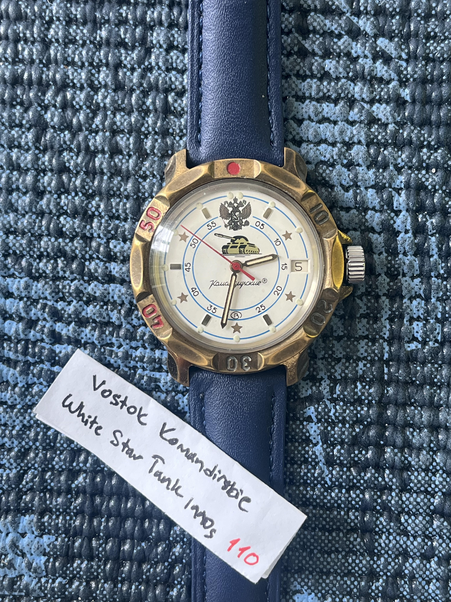
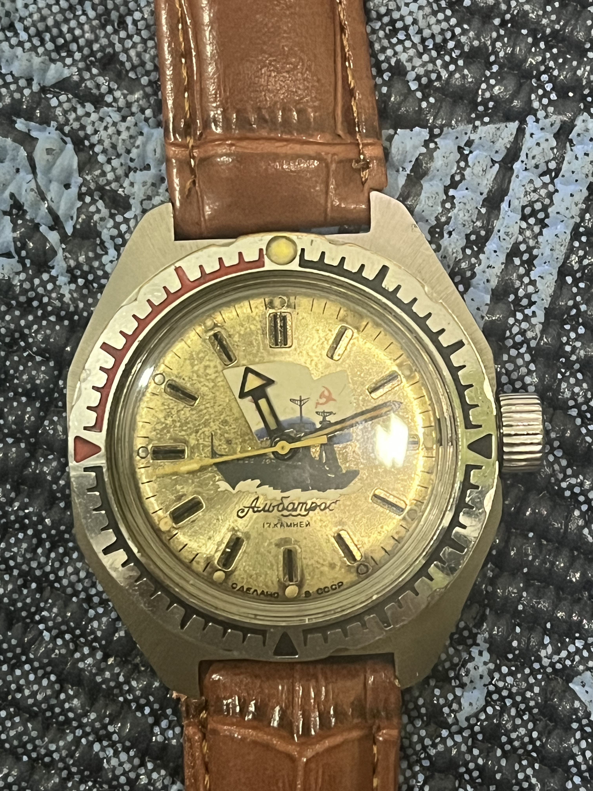

A Vostok watch can be a surprisingly expressive object: a modest mechanical movement behind a dial full of ships, aircraft, stars or colour. Its appeal lies partly in that contrast. These are practical watches that have also become small records of the worlds in which they were made, sold and worn.
To understand them, it helps to separate the factory’s history from the stories attached to individual dials. A military emblem is not, by itself, proof of military service. A modern replacement dial is not evidence of what a watch looked like when it left Chistopol. The broader history gives us context; the particular object still needs to be examined.
01 / Origins
A factory in Chistopol
The origins of Vostok are usually traced to 1941, when equipment and personnel from Moscow’s Second Watch Factory were evacuated to Chistopol, in what is now the Republic of Tatarstan. That wartime relocation laid the foundation for the Chistopol watchmaking enterprise. The distinction matters: the factory’s roots predate the familiar Vostok name on later watch dials. [1][3]
The VostokAmphibia.com account dates the start of production for the Soviet Army to April 1942 and the manufacture of civilian watches, including the Kirovskie men’s wristwatch, to 1943. The factory’s early work therefore connected military production with the everyday business of keeping time. [1]
Vostok-Watches24’s historical account puts it simply: The history of the watch manufactory in Chistopol began in the autumn of 1941.
Its account describes the movement of equipment and specialists from Moscow, followed by the work of establishing production in a new location. That context places the factory’s beginnings in wartime necessity rather than in the launch of a consumer watch brand. [3]
02 / A familiar name
The Komandirskie
The collector reference Watches of the USSR dates the development of the Komandirskie line to 1965, when it says the factory became an official supplier to the Soviet Ministry of Defence. Vostok-Watches24’s history also identifies 1965 as the start of an official military-supply relationship. The Komandirskie name is translated as “commander’s”, and the line’s identity became closely tied to military-themed design. [2][3]
It is easy to turn that visual language into an overconfident sales description. A dial showing a submarine does not establish that the watch belonged to a submariner. Nor should every Komandirskie be described as a military-issued watch. Civilian sales, export production, later dial changes and the individual watch’s ownership history all complicate the picture.
The same collector reference discusses watches marked Заказ МО СССР, translated there as Ordered by the Ministry of Defense of the USSR
. It describes sales through military shops, or Voentorg, and explicitly distinguishes those purchases from military issue. That is a useful warning against treating every military-looking dial as proof of a service history. [2]
For collectors, those complications are part of the interest. The watch is both an engineered object and a piece of visual culture. Its case, movement, markings and documentary history should be considered together.

03 / Built for the water
The Amphibia
Introduced in 1967, the Amphibia became Vostok’s best-known diving-watch family. The commercial history published by VostokAmphibia.com describes the original concept as a mechanical watch designed for pressure equivalent to a depth of 200 metres. It credits engineers Mikhail Novikov and Vera Belova with developing the design. Their task connected the watch’s external appearance to a less visible problem: how its components would behave together under pressure. [1]
The same account explains that the case, crystal, gasket and back were intended to work as a system. Rather than treating external pressure solely as a force to resist, the design used the behaviour of its sealing components under pressure. The crystal’s geometry and the gasket’s ability to compress and recover were central to that approach. [1]
This makes the Amphibia interesting for reasons beyond its dial. Its history is also a story about materials and production: designing components that could perform together, then finding ways to manufacture them with the available equipment. The published account describes difficulties producing the stainless-steel case and selecting suitable gasket material. [1]

04 / Continuity and change
After the Soviet Union
Vostok’s story did not stop with its Soviet origins. The specialist Amphibia history supplied for this article describes continuing production and a range of later case shapes, dial designs and mechanical configurations. Its account presents the Amphibia as an enduring design family rather than a single, unchanging model. [1]
That is an important distinction when looking at a vintage example. A model family’s introduction date does not date every watch bearing its name. Nor does a catalogue photograph establish the manufacturing history of a different watch with a similar dial.
Our own collection illustrates the variety: the Komandirskie Hovercraft Blue, Komandirskie Gold Star and Amphibia photographed here differ substantially in appearance. They are examples to examine, rather than a complete visual chronology of the factory’s output.
05 / Looking more closely
Reading a vintage Vostok today
The most rewarding starting point is curiosity rather than a search for a single “correct” dial. Look at how the case, hands, dial and movement relate to one another. Ask which parts are original, which have been restored or replaced, and what evidence supports a claimed date or service history.
Mechanical condition deserves equal attention. A striking face cannot tell you whether the movement needs servicing, the winding system is sound or the crystal is properly fitted. A clear account of condition is more useful than a dramatic but unsupported origin story.
What remains compelling about Vostok is the meeting of engineering, everyday use and imagery. A Komandirskie or Amphibia can be an accessible way into that history, provided we allow the evidence to be more interesting than the myth.
Further reading & references
Sources and image credits
The following commercial histories and collector reference provide the historical accounts cited above.
- VostokAmphibia.com, Vostok Amphibia History: How the Legendary 200m Soviet Dive Watch Was Created. Commercial specialist history; supports the 1941 origins, 1967 introduction and discussion of the Amphibia’s pressure-sealing design.
- Watches of the USSR, “Komandirskie / Командирские”. Collector reference; supports the 1965 account, translation of the model name and distinction between military-shop sales and military issue.
- Vostok-Watches24, History. Dealer history; supports the wartime evacuation to Chistopol and the 1965 military-supply chronology.
Editorial source note: The cited texts were reviewed from supplied copies; the live pages were not independently retrieved. Dates follow the cited secondary accounts, rather than original factory records.
Photographs: Mokosh Threads collection images, reused from our watch catalogue. They illustrate collection examples rather than a complete chronology of original factory configurations.